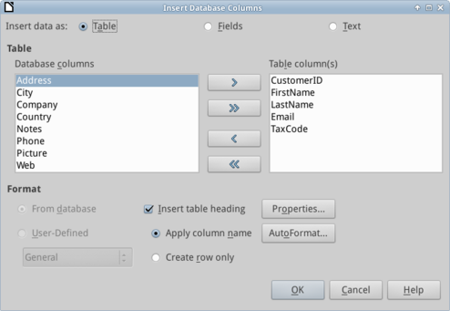
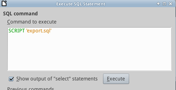

Transfer data
Created sabato 21 febbraio 2015
Transfer data to other applications
Working within LibreOffice allows you to transfer data between applications of the suite, there are different levels of integration which are well described in the chapter X of “Getting Started with LibreOffice” guide.

Tables and data from LibreOffice BASE are easily transferred to Writer as usual with “CTRL+C” and “CTRL+V”, however the purpose of placing data in a word processor is different from a spreadsheet. For this tutorial copy “Customers” table and paste in a Writer document.
Create a report with Writer
For example pasting tables to Calc is the favorite way to export to .cvs format, but it doesn’t create a nice report; if we want to present nicely data we should paste in Writer.

While pasting select few fields to create a nice address book and click on “AutoFormat” to choose a color combination of your taste.
Export
Whenever we approach multi-user environments we need to be able to export and import the database structure and records. This a usually done in SQL by the use of standard commands like SCRIPT.

For this tutorial go to menu Tools → SQL to run command SCRIPT 'export.sql' and export your database in SQL format, open the file (that will be on your home folder) with a text editor to examine the content. Generally speaking to import this file to MySQL or any other SQL engine you will need to adapt the dialect, as a matter every engine may have few little differences. Obviously this may also be done automatically to have a periodic backup.
@setup @xtimecard @software
Backlinks:
Home:Software:xTimeCard:Set-up